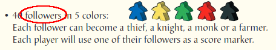
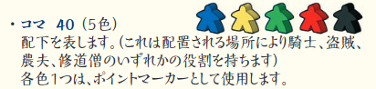

下のこいつを、皆さんは何と呼んでいますか？
そう。ミープルと呼んでいる人が多いと思います。私もミープルと呼んでいます。しかしこいつを単に駒と呼ぶ人もいますし、それはまったく間違っていません。
中にはフォロワーと呼ぶ人もいます。フォロワー？なんじゃそれ？と思う人もいるかもしれません。カルカソンヌの初版の頃のマニュアルを紐解いてみると (下図)、こいつの名前はフォロワーだったのです。そのため初版の頃からカルカソンヌをプレイしている多くの人たちは、今でもこの駒のことをフォロワーと呼ぶ人が少なくないようです。
この駒がフォロワーからミープルと記載されるようになるまでのエピソードもオンラインで見つけることができます。
なおメビウスゲームズ版公式日本語マニュアルでは、初期は下図のように単にコマと記載され、置いた地形により盗賊になったり、騎士になったり、修行僧になったり、農夫になったりとコロコロ名前が変わるのですが、上図の初版のマニュアルにもそのように記載されてるので、そのまま盗賊、騎士、修行僧、農夫と記載されるようになったのだろうと推察します。
上の図を見て気がついた人がいるかもしれません。コマの説明に “配下” と書かれています。これはどうやら “follower” を “配下” と訳したようです。
カルカソンヌ拡張のルールを個人的に和訳しているときに Google 翻訳などをつかっておおよその訳のあたりをつけてみたりしているのですが、結構頻繁に “手下” や “部下” といった言葉がでてきます。ときには “狂信者” なんて言葉も。これら全部 “follower” の訳だったりします。Google 翻訳をそのまま真に受けると意味が通らなくなるのがよくわかります。
なお現在のメビウスゲームズ公式日本語版のルール、つまりカルカソンヌ 21 のルールには、盗賊、騎士、修行僧、農夫といった言葉はもはや出てきません。部下も手下も出てきません。全てミープルに統一されていて、初めてカルカソンヌをプレイする人が混乱しないように訳に工夫がされています。ドイツ語版と英語版の第 3 版 (カルカソンヌ 21 と同一の現行最新版) のマニュアルにそれらの言葉が残っているのとは対象的です。
ドイツ語版、英語版では、theef、knight、monk、farmer という言葉を、わかりやすさを第一優先にするためとはいえ、バッサリと消してしまうことは心情的にできなかったのかもしませんし、あるいは、人にとってすでにあるものを消してしまうような行為自体が難しいことなのかもしれません。
そういった意味でも、カルカソンヌのルールを短時間で理解したいなら、メビウスゲームズさんがリリースされているカルカソンヌ 21 に付属する公式日本語ルールを読むことをお勧めします。おそらく世界で最も整理されて理解しやすい説明書ではないでしょうか。
初版の説明書には、修道院 (Monastery) という文字はありませんでした。その代わりに同じ絵柄のタイルの説明には、回廊 (Cloisters) と書かれていました。もちろんタイルのデザインは今のものよりは地味ではあるものの、絵として同じものを回廊と書いています。
The Book of Carcassonne: Strategy, Tips and Tactics という本の中でも、少しだけですが、回廊から修道院への改名に関して触れられています。本書内では初版のマニュアルの誤記ではないか、という説が唱えられています。仮にそうであっても、人は定着してしまっている呼称の変更はやはりなかなか受け入れがたいもののようです。
©2024 OrzBruford